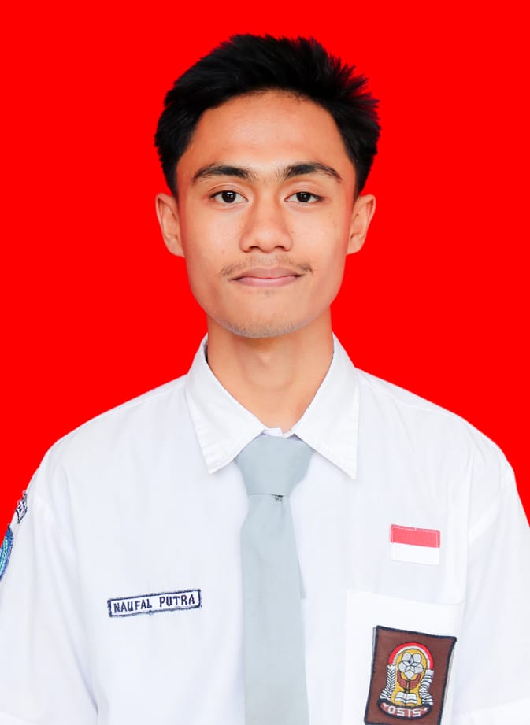

Mahasiswa Universitas Maritim Raja Ali Haji
Halo, nama saya Naufal Putra Azjril dan saya biasa dipanggil Opan. Saya lahir di Batam tanggal 24 Januari 2007. Saya merupakan anak pertama dari 3 bersaudara. Saya berasal dari Batam dan sejak kecil menjalani pendidikan di berbagai sekolah di Batam.
Saat ini saya sedang menempuh pendidikan di Universitas Maritim Raja Ali Haji (UMRAH). Saya memilih untuk melanjutkan pendidikan di bidang informatika karena saya tertarik dengan teknologi dan komputer.
Di waktu luang, saya memiliki hobi bermain futsal, jogging, dan olahraga lainnya. Olahraga tidak hanya membuat tubuh menjadi sehat, tetapi juga menyenangkan dan dapat menghilangkan stres.
VS Code - editor kode, pernah dipakai untuk menulis C++, C, HTML dan CSS
MySQL - basis data (database), pernah digunakan
Ubuntu - sistem operasi Linux, pernah digunakan
⚽ Bermain futsal
🏃 Jogging
🏋️ Berolahraga